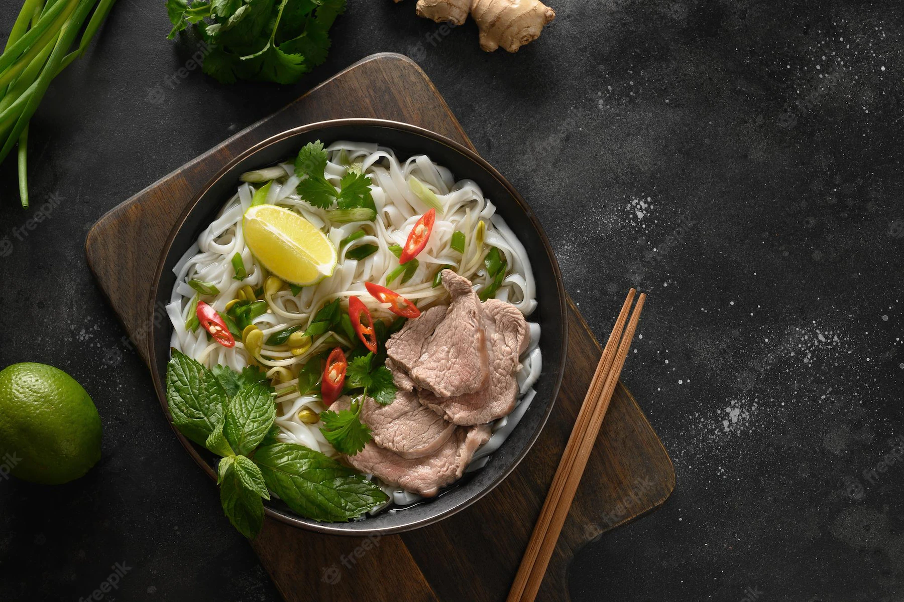

Pho Bo

Description
Pho bo is a traditional vietnamese dish. It is a noodle soup with a rich and clear beef broth, thin beef slices and rice noodles.
Ingredients
Yields 8 servings
Broth
- 2 onions
- 10cm long ginger piece
- 3 kg beef soup bones
- 5 star anise
- 15 cm cinnamon stick
- 500g beef brisket
- 1,5 tbsp salt
- 4 tbsp fish sauce
- 30g sugar
Bowls
- 800g dried pho noodles
- 300g sirloin steak, thinly sliced
- 1 medium onion
- 4 scallions
- 0,3 cup chopped cilantro
- ground black pepper
Garnish
- spearmint
- thai basil
- cilantro
- bean sprouts
- lime wedges
Steps
Prepare the broth
-
Char onion and ginger.Use an open flame on grill or gas stove.
Place onions and ginger on cooking grate and let skin burn.
(If using stove, turn on exhaust fan and open a window.)
After about 15 minutes, they will soften and become sweetly fragrant.
Use tongs to occasionally rotate them and to grab and discard any flyaway onion skin.
You do not have to blacken entire surface, just enough to slightly cook onion and ginger.
-
Let cool.Under warm water, remove charred onion skin; trim and discard blackened parts of root or stem ends.
If ginger skin is puckered and blistered, smash ginger with flat side of knife to loosen flesh from skin.
Otherwise, use sharp paring knife to remove skin, running ginger under warm water to wash off blackened bits. Set aside.
-
Parboil bones.Place bones in stockpot (minimum 12-quart capacity) and cover with cold water.
Over high heat, bring to boil. Boil vigorously 2 to 3 minutes to allow impurities to be released.
Dump bones and water into sink and rinse bones with warm water. Quickly scrub stockpot to remove any residue. Return bones to pot.
-
Simmer broth.Add 6 quarts water to pot, bring to boil over high heat, then lower flame to gently simmer.
Use ladle to skim any scum that rises to surface. Add remaining broth ingredients and cook, uncovered, for 1,5 hours.
Boneless meat should be slightly chewy but not tough.
When it is cooked to your liking, remove it and place in bowl of cold water for 10 minutes; this prevents the meat from drying up and turning dark as it cools.
Drain the meat; cool, then refrigerate. Allow broth to continue cooking; in total, the broth should simmer 3 hours.
-
Strain the pho broth through fine strainer. If desired, remove any bits of gelatinous tendon from bones to add to your pho bowl.
Store tendon with cooked beef. Discard solids.
-
Use ladle to skim as much fat from top of the pho broth as you like. (Cool it and refrigerate it overnight to make this task easier; reheat before continuing.)
Taste and adjust flavor with additional salt, fish sauce and yellow rock sugar.
The pho broth should taste slightly too strong because the noodles and other ingredients are not salted.
(If you've gone too far, add water to dilute.) Makes about 4 quarts.
Assemble the bowls
-
The key is to be organized and have everything ready to go. Thinly slice cooked meat. For best results, make sure it's cold.
-
Heat the pho broth and ready the noodles.To ensure good timing, reheat broth over medium flame as you're assembling bowls.
If you're using dried noodles, cover with hot tap water and soak 15-20 minutes, until softened and opaque white. Drain in colander.
For fresh rice noodles, just untangle and briefly rinse in a colander with cold water.
-
Blanch noodles.Fill 3- or 4-quart saucepan with water and bring to boil. For each bowl, use long-handle strainer to blanch a portion of noodles.
As soon as noodles have collapsed and lost their stiffness (10-20 seconds), pull strainer from water, letting water drain back into saucepan.
Empty noodles into bowls. Noodles should occupy 0,4 to 0,3 of bowl; the latter is for noodle lovers, while the former is for those who prize broth.
-
If desired, after blanching noodles, blanch bean sprouts for 30 seconds in same saucepan.
They should slightly wilt but retain some crunch. Drain and add to the garnish plate.
-
Add other ingredients.Place slices of cooked meat, raw meat and tendon (if using) atop noodles.
(If your cooked meat is not at room temperature, blanch slices for few seconds in hot water from above.)
Garnish with onion, scallion and chopped cilantro. Finish with black pepper.
-
Ladle in broth and serve.Bring broth to rolling boil. Check seasoning.
Ladle broth into each bowl, distributing hot liquid evenly so as to cook raw beef and warm other ingredients.
Serve your pho with with the garnish plate.